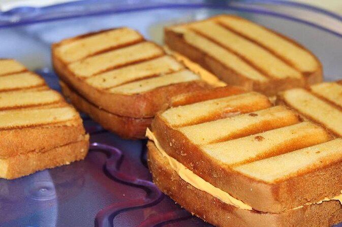

Grilled Cheese Sandwich

Description
This delicious 'sandwich' is perfect for April Fool's Day, Halloween, or even birthday parties.
Ingredients:
- 1 pound cake, cut into 1/2-inch slices
- 6 tablespoons butter, softened
- 1/2 teaspoon yellow food coloring
- 1/8 teaspoon red food coloring
Steps:
- Spread butter on both sides of each pound cake slice.
- Heat a griddle over medium heat. Cook cakes slices on hot griddle, turning once, until golden brown on each side, 3 to 5 minutes. Transfer cake slices to a wire rack to cool completely.
- Stir frosting, yellow food coloring, and red food coloring together in a bowl until frosting is the color of American cheese.
- Spread frosting on 1 side of half of the pound cake slices and top with another slice of pound cake.
Return to main page.